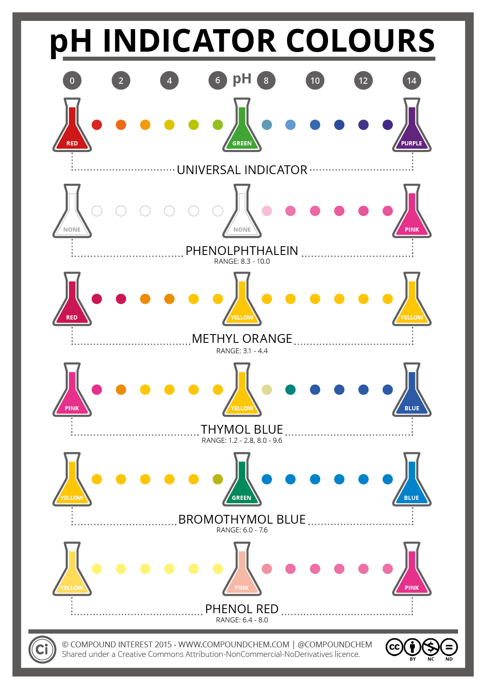

pH에 따른 지시약 색 변화
지시약은 특정 pH 범위에서 색이 변하며, 이를 전이 범위라고 합니다.
각 지시약은 고유한 전이 범위를 가지고 있어 다양한 pH 영역에서 활용됩니다.
산-염기 적정에서는 종말점을 확인하기 위해 적절한 지시약을 선택하는 것이 중요합니다.

지시약은 특정 pH 범위에서 색이 변하며, 이를 전이 범위라고 합니다.
각 지시약은 고유한 전이 범위를 가지고 있어 다양한 pH 영역에서 활용됩니다.
산-염기 적정에서는 종말점을 확인하기 위해 적절한 지시약을 선택하는 것이 중요합니다.